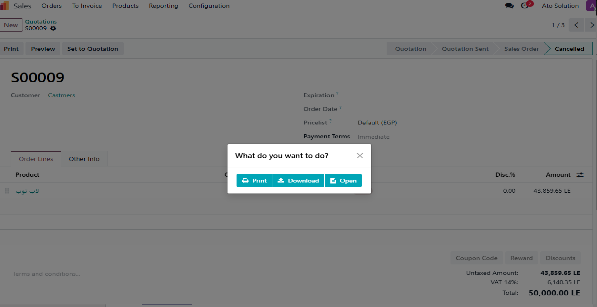
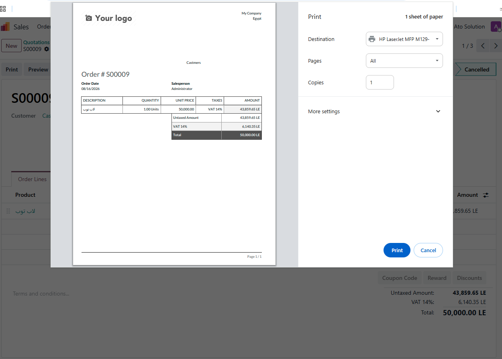

Print, download or open PDF reports directly from Odoo.
Enhanced with desktop and mobile printing support.
When generating a PDF report, choose whether you want to print, download or open the report.

Send reports directly to the browser print dialog. Printing is supported on both desktop and mobile devices.

Odoo Version: 19.0
Edition: Odoo Community
Devices: Desktop, Tablet and Mobile
Languages: English, Arabic
Original module:
Pdf report options
by Luis Rodrigo Mejia Mateus.
Updated for Odoo 19 and enhanced with mobile printing support
by ATO Solution.